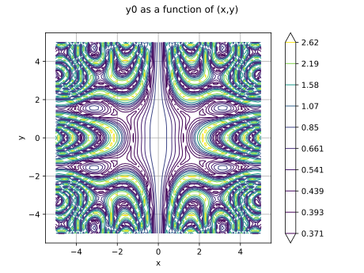
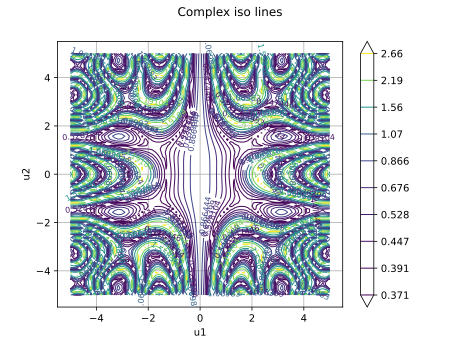
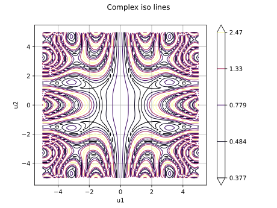
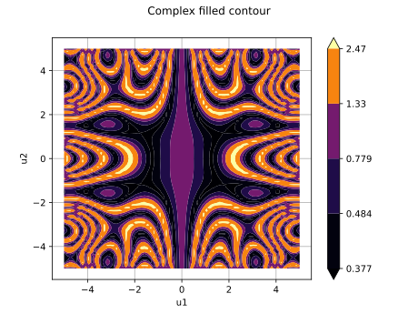
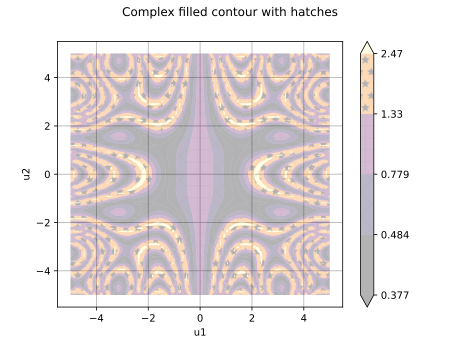
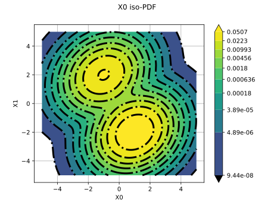
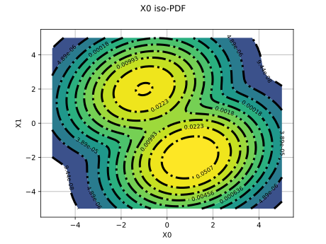

Note
Go to the end to download the full example code.
A quick start guide to contours¶
# sphinx_gallery_thumbnail_number = 6
In this example we show how to create contour graphs and how to make the most of their display settings.
The draw method, the Graph and Contour classes¶
The simplest way to create a contour graph is to use the draw method of a bidimensional function.
import openturns as ot
import openturns.viewer as otv
We build a bidimensional function (function of x and y), define the study domain and the sample size
f = ot.SymbolicFunction(["x", "y"], ["exp(-sin(cos(y)^2 * x^2 + sin(x)^2 * y^2))"])
XMin = -5.0
XMax = 5.0
YMin = -5.0
YMax = 5.0
NX = 75
NY = 75
We build the graph by calling the draw method and display it

The graph contains a unique drawable whose implementation is of class Contour
contour = graph.getDrawable(0).getImplementation()
print(type(contour).__name__)
Contour
Another way to build the contour is to build the data sample and give it to the constructor of the Contour class
By creating an empty graph and adding the contour we can display the whole.

The previous graph does not show the associated color bar. This point can be modified. We will also change the color map, the number of contour lines and hide the labels.
contour.setColorBarPosition("right")
contour.setColorMap("inferno")
contour.buildDefaultLevels(5)
contour.setDrawLabels(False)
graph.setDrawables([ot.Drawable(contour)])
view = otv.View(graph)

For such a function, contour lines are not easy to interpret. We will modify the contour to use filled areas.
contour.setIsFilled(True)
graph.setTitle("Complex filled contour")
graph.setDrawables([ot.Drawable(contour)])
view = otv.View(graph)

Sometimes the colors are not very distinct because some levels are very close while others are very far apart. In this case, it is possible to add hatching to the surfaces. Here we will also use transparency to soften the colors.
contour.setAlpha(0.3)
contour.setHatches(["/", "\\", "/\\", "+", "*"])
graph.setTitle("Complex filled contour with hatches")
graph.setDrawables([ot.Drawable(contour)])
view = otv.View(graph)

When the function takes values very different in magnitude, it may be useful to change the norm which is used to distribute the colors and to bound the color interval. Here we will also let Matplotlib calculate the levels by not giving any level to the contour
contour.setColorMapNorm("log")
contour.setLevels([])
contour.setExtend("neither")
contour.setVmin(0.5)
contour.setVmax(2)
graph.setTitle("Complex contour with log norm and automatic levels")
graph.setDrawables([ot.Drawable(contour)])
view = otv.View(graph)

These capabilities can also be leveraged for distributions. We build here 2 distributions, Funky and Punk, which we mix.
corr = ot.CorrelationMatrix(2)
corr[0, 1] = 0.2
copula = ot.NormalCopula(corr)
x1 = ot.Normal(-1.0, 1)
x2 = ot.Normal(2, 1)
x_funk = ot.JointDistribution([x1, x2], copula)
x1 = ot.Normal(1.0, 1)
x2 = ot.Normal(-2, 1)
x_punk = ot.JointDistribution([x1, x2], copula)
mixture = ot.Mixture([x_funk, x_punk], [0.5, 1.0])
The constructed graph is composed of the superposition of a filled contour and iso lines. We also changed the thickness and style of the lines to show the effect although it is not useful here.
graph = mixture.drawPDF([-5.0, -5.0], [5.0, 5.0])
# Add level lines above filled contour
contour = graph.getDrawable(0).getImplementation()
contour.setColor("black")
contour.setColorBarPosition("")
contour.setLineWidth(3)
contour.setLineStyle("dotdash")
graph.add(contour)
# Modify previous contour to fill the graph and use log norm
contour = graph.getDrawable(0).getImplementation()
contour.setIsFilled(True)
contour.setColorMapNorm("log")
graph.setDrawable(0, contour)
view = otv.View(graph)

If the color bar is not sufficiently meaningful, it is possible to add the labels of the values of each level line on the drawing. Here the labels are reformatted to use scientific notation and define precision.
contour = graph.getDrawable(0).getImplementation()
contour.setColorBarPosition("") # Hide color bar
graph.setDrawable(0, contour)
contour = graph.getDrawable(1).getImplementation()
contour.setDrawLabels(True)
contour.setLabels(["{:.3g}".format(level) for level in contour.getLevels()])
graph.setDrawable(1, contour)
view = otv.View(graph)
otv.View.ShowAll()
